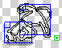

Little Fighter 2 Wiki
By Leviaiz (rewlf2), 2021
Template

Template is the only character in LF2 who does not appear as an enemy in Stage mode. It is also the only character not locked behind password, but unselectable by Random at the same time.
It is expected as a sample character and is approximately as strong as Bandit.
| In Random | Locked by password | Stage mode | Battle mode |
|---|---|---|---|
| No | No | No appearance | No appearance |
Stats
| Walk | Run | Jump | Dash | Roll | |
|---|---|---|---|---|---|
| X | 4 | 8 | 8 | 15 | 7 |
| Z | 2 | 1.3 | 3 | 3.75 | 0 |
| Y | 16.3 | 11 | |||
| TU | 11 |
Basic moves
 | Startup | Active | Recovery | Fall | Damage | Properties |
|---|---|---|---|---|---|---|
 | 2 | 4 | 0 | 20 | 20 | None |
Stuns in 3 hits. Due to hitbox lasting until end of move, if Template damages enemy after first tu of active hitbox, its next punch can hit earlier.
| (At stunned) | Startup | Active | Recovery | Fall | Damage | Properties |
|---|---|---|---|---|---|---|
 | 5 | 5 | 0 | 70 | 50 | None |
Knocks enemy up. Has frame advantage if enemy flips. Has no recovery time, allowing instant dash.
 | Startup | Active | Recovery | Fall | Damage | Properties |
|---|---|---|---|---|---|---|
 | 5 | 6 | 4 | 70 | 20 | None |
Poor startup and hits single enemy, possibly the worst runA in game. Only usable as read and overshadowed by runWA.
 | Startup | Active | Recovery | Fall | Damage | Properties |
|---|---|---|---|---|---|---|
 | 3 | 21 | 0 | 70 | 70 | None |
The only engage/disengage tool without weapon. Has an absurd active but is only fair among all characters.
| Startup | Active | Recovery | Fall | Damage | Properties |
|---|---|---|---|---|---|---|
 | 2 | 7 | 0 | 20 | 35 | None |
Very similar to Bandit jumpA. Can abuse to stunlock single enemy. Not viable as engage.
Weapon moves
 | Startup | Active | Recovery |
|---|---|---|---|
 | 5 | 3 | 3 |
Hitbox is consistent despite deceiving sprite.
| Startup | Active | Recovery |
|---|---|---|---|
 | 5 | 6 | 4 |
Worse than Bandit due to passive moving forward. Double hit on block 1st frame hit.
| Startup | Active | Recovery |
|---|---|---|---|
 | 5 | 8 | 0 |
Worse than Bandit in all aspects, has no rear hitbox. Deceptive sprite, only hits low.
| Startup | Active | Recovery |
|---|---|---|---|
| 4 | 8 | 0 |
Worse than Bandit in all aspects, has no rear hitbox. Deceptive sprite, only hits low.
 | Startup | Recovery | X-speed | Z-Speed | Y-Speed |
|---|---|---|---|---|---|
 | 8 | 10 | 14 | 3 | 4 |
Bad minion-rank duration. Short range makes it only usable as read.
 | Startup | Recovery | X-speed | Z-Speed | Y-Speed |
|---|---|---|---|---|---|
 | 8 | 10 | 12 | 3 | -8 |
Bad minion-rank duration. Short range makes it only usable as read.
 | Startup | Recovery | X-speed | Z-Speed | Y-Speed |
|---|---|---|---|---|---|
|  | 8 | 10 | 12 | 3 | -8 |
Drink, baseball dash throws at point-blank range. Land cancels recovery. Cannot reverse dash throw.
 | Startup | Recovery | X-speed | Z-Speed | Y-Speed |
|---|---|---|---|---|---|
 | 6 | 11 | 8 | 4 | 2 |
Bad minion-rank duration. Short range makes it only usable as read.
Special moves
Template has no special moves.
Grab moves
| Startup | Active | Recovery | Damage | Properties |
|---|---|---|---|---|---|
 | 5 | 0 | 4 | 15 | None |
Low-tier grab attack. Can chain at most 5 times, or 4 times plus throw.
| Startup | Active | Recovery | Damage | Properties |
|---|---|---|---|---|---|
 | 9 | 0 | 11 | 30 | Full dark HP damage |
Enemy is thrown dealing 30 any-team damage. Bad minion-rank duration. Short range makes it only usable as read.
Julian
Firzen
LouisEX
Bat
Deep
John
Henry
Rudolf
Louis
Firen
Freeze
Dennis
Woody
Davis
Justin
Knight
Jan
Monk
Sorcerer
Jack
Mark
Hunter
bandit
Stick
Hoe
Knife
Baseball
Milk
Stone
Wooden box
Beer
Boomerang
Louis's Torso armor
Louis's Limb armor
VS mode
Stage mode
Survival mode
Championship
Battle mode
Demo
Interface
History of LF2
Control settings
Recording function
Advertisement
About LF2
Little Fighter 2 (LF2; Chinese: 小朋友齊打交2) is a Hong Kong freeware PC fighting game for Windows and is the sequel to the game Little Fighter. Little Fighter 2 was created by Marti Wong and Starsky Wong in 1999, and received a long series of updates.
The game supports up to 4 human players on one computer and a total of 8 characters using online play or computer-controlled opponents. Characters are controlled using the keyboard or a gamepad. All keys can be custom set via a configuration menu.
Characters
LF2 features 10 main, 4 hidden boss, 9 minions and 1 template characters. The main characters are often called "Heroes" or "Fighters" by players and fans. (Any character is a "fighter" according to character selection screen though.) Many characters are based on popular ACG products at that time, including Songoku and Seiya, and some characters are based on same or similar-named characters in previous games created by Marti Wong.
Spinoff products
All the characters were featured in various spinoff media products, including artwork, fanfiction and animations. Famous products include Bandep comic, LF2 Julian War animation and 新世紀降魔傳 fanfiction.
Expert player groups
The balance of LF2 was never thoroughly tested, as mentioned by Marti Wong, the strength of moves were only rated with undisclosed score to ensure the game was not broken.
Nevertheless, the innovative playing style of mixing fighting game and beat'em up has given rise to a very high skill ceiling, and to explore the possiblities of the game, many early gamers craeted social groups, held tournaments, created custom rules and rating systems, building the first communities within several forums like HKLFF.
Data changing
The data changing community never started until Jiquera Mondilano, a Philipine programmer discovered a way to decrypt the close-sourced .dat files inside LF2 program, and created the first data changer, named lf2_dc_v1.4. Although Marti Wong did not approve of this, he took no legal action against it.
Before that, data modification was limited to swapping data files and modifying data.txt, an index file inside LF2 program folder.
The widespread of the program led to an immense burst of the data changing community, leading to thousands of modified characters, backgrounds, and creation of mechanics unexpected in the original game. It also improved the popularity of the original game, although the data changer community would soon develop a bitter relationship with the expert player groups.
Exe file changing
The earliest modified exe available is suspected to be "LF2 XP", a lf2 v1.9 game program swapped with silvery interface graphic. It was created in 1 Jan 2004.
Many modified programs are published, famous ones include Alcarter's exe which includes many new functions like real-time loading, NTSD's exe specialized for the NTSD mod, allowing characters to run on walls, and Leaf's exe which also has new gimmicks.
Some programs are specialized in changing the graphics, resulting in completely different outlook, like NTSD, LF2 Rhythm of Night and LF2: Story of HongBa.
Official spinoffs
Little Fighter Online was a MMORPG fighting game released as a collaboration of Marti Wong and Oscar Chu, the latter being CEO of U1 Technology. It ran on Windows platform and employed a freemium model, in which many new characters, moves and items were exclusive to purchase to be unlocked.
Hero Fighter was a beat'em up game run on PC, released by Marti Wong. After the last update on 17 Nov 2012, the project had no official updates and it was reported to be unplayable in modern computers, due to end of service of Adobe Flash Player and software rot problem.
Hero Fighter X was the successor of Hero Fighter, which the former runs on android and iOS. It also had no official update after 17 Nov 2015.
LF2 remastered is an upcoming game announced by Marti, which was claimed would be available on Q4(Oct to Dec) of 2022. The game would include all function of latest version of LF2, along with 3 new characters, a new Stage 6 and redrawn graphics.
Davis action figures were a francise sold on lf2.net. Due to inventory problem and Marti moving away from Hong Kong for a long time, the selling was terminated.
History of LF2
Development of LF2: the game
This is a simplified version of progress table hosted in lf2.net.
| Date | Version | Event |
|---|---|---|
| Sep 1999 | The DirectDraw Libraries of LF2 were built. This marks the beginning of development. | |
| 31 Dec 1999 | The first character, Template, was designed and its action pictures were drawn. | |
| 17 Jan 2000 | The menu, program interface of LF2, along with all basic mechanics of earliest characters completed. From the screenshot in the website, the interface looked like v0.7. (It does not confirm v0.1 actually has this interface...) | |
| 24 Jan 2000 | A test background, later retained as Lee On Road was completed. | |
| 25 Jan 2000 | 0.1 | |
| 3 Feb 2000 | 0.2 | Control settings, character selection and sound added. |
| 18 Feb 2000 | Bugfix | |
| 23 Feb 2000 | 0.3 | Computer selection, AI and groupingwere added. |
| 24 Feb 2000 | Chinese version of lf2.net was written. | |
| 26 Feb 2000 | Bugfix | |
| 31 Mar 2000 | 0.4 | Bandit and special effect added. |
| 22 May 2000 | 0.5 | John, weapon spawning and despawning mechanism, special move mechanism and energy blast added. |
| 7 Aug 2000 | 0.6 | Deep, arrow and Henry added. |
| 25 Aug 2000 | 0.7 | Rudolf, darts (throwing weapon) added. |
| 13 Oct 2000 | 0.8 | Louis added. |
| 30 Oct 2000 | 0.9 | Firen and Freeze added. |
| 29 Nov 2000 | 1.0 | Davis, Dennis and Woody added. |
| 25 Dec 2000 | 1.1 | Multiple weapons and character moves added. |
| 30 Jan 2001 | 1.2 | MP system, John and Deep moves added, AI improved. |
| 15 Mar 2001 | 1.3 | Freeze, Rudolf, Henry moves added. |
| 8 Apr 2001 | 1.35 | Firen, Louis moves added. |
| 2 May 2001 | 1.4 | Firen, Freeze moves added. |
| 30 May 2001 | 1.41 | 2 backgrounds, rudolf moves, beer added, game was upgraded to support WinNT and Win2000 |
| 29 June 2001 | 1.45 | John, Woody, Davis, Dennis moves, boomerang added. |
| 16 July 2001 | 1.451 | Disclose the image source of Template. |
| 15 Oct 2001 | 1 on 1 Championship, Demo, Woody move, 3 backgrounds added. | |
| 31 Oct 2001 | 1.55 | 2 on 2 Championship, Stage 1 and 2, Hunter, Mark added. |
| 18 Jan 2002 | 1.6 | Stage 3, The Great Wall, LouisEX, Sorcerer, Jack added. |
| 10 Apr 2002 | 1.7 | Stage 4, Queen's Island, Firzen, Jan, Forbidden Tower added. |
| There is no v1.8. | ||
| 27 Sep 2002 | 1.9 | All portraits redrawn, Battle mode, Stage 5, Julian, Justin, Bat, Knight added, sound effect changed |
From this onwards the progress is recorded in various sources.
| Date | Version | Event |
|---|---|---|
| 12 Sep 2008 | 2.0 | Supports Windows Vista (officially stated, though it means all XP-class OS are supported), introduced numlock bug unintentionally. Music, advertisement added, main interface redesigned. |
| 11 Jul 2008 | 2.0a | Fixed mirroring, numlock bug. |
Development of LF2 spinoff games with Marti Wong involved
| Date | Event |
|---|---|
| 22 Oct 2004 | Little Fighter Online was released as a collabration of Marti Wong and Oscar Chu, the latter being CEO of U1 Technology. |
| 21 July 2009 | Test version of Hero Fighter, developed by Marti Wong was released. |
| 31 Jul 2009 | Hero Fighter v0.1 was released. (Update content omitted) |
| 19 Aug 2009 | Hero Fighter v0.2 was released. |
| 2 May 2011 | Hero Fighter v0.3 was released. |
| 27 Jun 2011 | Hero Fighter v0.4 was released. |
| 27 Oct 2011 | Hero Fighter v0.6 was released. |
| 10 Aug 2011 | Hero Fighter v0.5 was released. |
| 21 Jan 2012 | Hero Fighter v0.65 was released. |
| 17 Nov 2012 | Hero Fighter v0.7 was released. |
| 6 Jun 2015 | Hero Fighter X was released. |
| 12 Oct 2015 | Hero Fighter X v1.08 was released. |
| 17 Nov 2015 | Hero Fighter X v1.09 was released. |
| 17 Jan 2016 | Little Fighter Online stopped service. |
| 16 Mar 2021 | The Little Fighter NFT project was released. |
| 2 Jun 2021 | A election for style rebrand of LF2 remastered was released. |
| 17 Jun 2021 | The new design of Davis in LF2 remastered was confirmed. |
| 24 Jun 2021 | The first NFT spinoff of LF2: "The source code" was minted. |
Reference:
Creators
Community
List of current communities: (Non-exclusive)
Note: if the site does not directly host files in its domain and forum feature, it is not classified as Archive. You can still surf in forum posts for downloads, but availability is not guaranteed.
| Name | Features | Language | Notes |
|---|---|---|---|
| Little Fighter Empire | Forum, Archive, Wiki | Eng | |
| Baidu forum | Forum | SimpleChi | Requires chinese mobile number (+86) to register to access old posts. |
| Baidu forum - LF2 Database | Forum | Eng | Same as above |
| Bahamut forum | Forum, Wiki | TradChi | |
| TWStar | Forum | Eng | |
| TWBBS returns | Forum, Wiki | Eng | |
| Deviantart: LF2-FC | Artwork | Eng | |
| Deviantart: LF2 | Artwork | Eng | |
| LF Forever | Forum | Russia | |
| LF2 Polish Center | Forum | Poland | |
| LF2 Israel | Forum | Israel | |
| LF2 Reddit | Forum | Eng | |
| Little Fighter Wikia | Wiki | Eng | |
| LF2 Wikia | Wiki | Eng | |
| Speedrun Leaderboard | Forum | Eng | |
| LF2 Replays | Forum | Eng | |
| LF2 Nostalgia | Wiki | TradChi/Eng | |
| LF2 Robbie United fansite | Wiki | TradChi | English version is not available |
| Luigi's Studio | Wiki, Archive | Eng | |
| F-LF project | Spinoff | Eng |
List of chat servers:
| Name | Language | Notes |
|---|---|---|
| Little Fighter Empire - Discord | Eng | |
| Chiko's LF2 Lobby - Discord | Eng | |
| LF2 Lobby - Discord | Eng | |
| LF2約戰聊天群 - Discord | Chi | |
| Little Fighter Forever - Discord | Russia | |
| Naruto: The Setting Dawn - Discord | Eng |
List of out-of-service communities (Too bad!)
| Name | Features | Language | Notes |
|---|---|---|---|
| Ztage forum | Forum | Chi/Eng | Originally named LF2 offical forum (lf2.net/forum), this moved to ztage.com after an outage. Archived under Luigi's studio. |
| LF2資源庫論壇 | Forum | SimpleChi | Hosted by Octopus(章魚), closed due to hosting ends. |
| TWBBS (台灣論壇) | Forum, Archive, Wiki | TradChi | Closed in 30 Nov 2012, it was one of major forums where taiwan players lurked in. |
| 藍魔鬼之家 | Archive | TradChi | Homepage of Blue-ghost, creator of LF2 Sidestory. |
| 小朋友齊打交和平會 | Wiki | TradChi | Created by GJP. |
| 小朋友齊打交ㄉ樂園 | Wiki | TradChi | |
| Hong Kong Little Fighter Utopia | Wiki | TradChi | Created by YU, martnwoo et al. , website is archived. |
| LF2同人小說《新世紀降魔傳》 | Fanfiction | TradChi | |
| LF2 global | Forum | Eng | Suffers from outage. |
| HK-LF2 | Wiki | TradChi | Taken down |
History of Community
LF2 official forum
| Date | Event |
|---|---|
| Before 2004 | An official forum built on EZboard was established by Marti and Starsky Wong. |
| Before 2004 | After multiple attacks, EZboard fell in popularity and eventually was deserted. |
| Unknown | Ztage forum was established. |
| 18 Nov 2018 | Ztage forum was suspended due to hosting materials without obtaining copyright. |
Hong Kong fan forums
| Date | Event |
|---|---|
| 2006-2007 | HKLFF was established by LF2 players. |
| 2007 | HKLFF was taken down due to lack of player paying the hosting fee. |
TWBBS
| Date | Event |
|---|---|
| 16 Mar 2004 | TWBBS started service. LF2 board was one of the first boards in the forum. |
| 1 Sep 2012 | Admin of TWBBS announced the following features: Posting, replying in forum, message board and direct messages, will be end-of service on Oct 2012. |
| 4 Jun 2012 | Admins received a letter from "MUST中華音樂著作權協會" stating "影視音樂" board cluster contains illegal media content, in response to this, all boards under "影視音樂" were forced to be closed. |
| 27 Jul 2012 | Admins received a complaint from a user, mentioning that many board adminisrrators were slacking in their jobs and advertisement posts were unregulated. In response to this, TWBBS disallowed user registration. |
| 29 Sep 2012 | Aforementioned function were disabled. |
| 30 Nov 2012 | Some forum participants started a petition on "Saving TWBBS", requesting to fund publicly to maintain the service of TWBBS, but the hosting company, 數字科技 denied the request to sell TWBBS. |
| 30 Nov 2012 | TWBBS was closed down. |
Little Fighter Empire
| Date | Event |
|---|---|
| 1 Jan 2005 | LF2-Empire started service. |
| 1 Aug 2005 | LF1-Empire started service. |
| 1 Dec 2005 | LFO-Empire started service. |
| 18 Jan 2006 | MH-Razen opened a forum about Little Fighters, possibly using Danethical. |
| Unknown | The aforementioned features were combined into LFE-Empire. |
| 6 Oct 2007 | Little Fighter - EMPIRE v8.0 was released. The site shifted from using html to JoomlaCMS. |
| Between Oct 2008-Aug 2008 | LFE-Empire forum completely crashed. A new LFE-empire forum start service, running with MyBB-Forumsoftware. |
| Before 14 Jan 2009 | Little Fighter - EMPIRE v10.0 was released. |
About this wiki
Little Fighter Wiki is a knowledge database about original LF2, the mechanics of in-game content including characters, backgrounds and modes, the history of the game, its creators and its community.
Using this wiki
This wiki is licensed under GPLv2. The content which directly involve LF2 program are NOT licensed under GPLv2, but under fair use.
This means you are free to use, distribute unaltered and altered copies of this wiki, with the following restrictions:
- The readable content of this site (as html) is referrable by propietary product as excerpt of the wiki.
- The source code (markdown files) when used inside as part of propietary product, remains licensed under GPLv2.
- Any copied work and modified work are required to be published with GPLv2 license.
- You must include the source code of the wiki and include/refer to GPLv2 license when publishing work.
- The contents from LF2 program (such as portrait of Julian) is not a bundled asset of the wiki. If you are using the images not for fair use, you must ask permission from the creators of LF2 (Marti Wong and Starsky Wong). I bear no responsibility for the consequence of misusing fair-use content on this site.
License information
Licensed under GPLv2. Content involving material from Little Fighter 2 program is under fair use: This website is for educational and commentary purpose only.
Copyright Disclaimer under section 107 of the Copyright Act 1976, allowance is made for “fair use” for purposes such as criticism, comment, news reporting, teaching, scholarship, education and research.
Fair use is a use permitted by copyright statute that might otherwise be infringing.
Non-profit, educational or personal use tips the balance in favor of fair use.
Wiki creator
Leviaiz (Rewlf2)
Programmer
LF2 Data changer with extensive knowledge of LF2 mechanics
Created about 60 products:
- 40+ backgrounds
- A dozen characters with new systems
- Compiled fully playable modified LF2 programs (LF2 mods)
- LF2: Story of HongBa - Fully fledged mod which includes complete story, new stage mode, characters and backgrounds, also acts as a compilation of my creations.
- LF2: Hetero Clash - Rebuild of RewLF2, more akin to original LF2 but still plays like R-LF2.
- Reality Little Fighters 2 - Overpowered mod inspired by R-LF2 and C-LF2.
- Mecha-LF: A small mod replacing characters with mecha from SRW J, featuring mecha systems like laser shield.
- Road to Fighter: A mechanism-changing mod aiming to replace all basic commands to match that of fighting games.
History
| Date | Event |
|---|---|
| 2004 | First knew about LF2 when doing project in classmate's home playing R-LF2. |
| 2004-2006 | Developered Reality Little Fighters (RewLF2) which becomes his online name. |
| 2009 | The first version (v193) of RewLF2 was published in LF2 official forum. Due to lack of balance, it was heavily criticized. |
| 2010 | After a whole year of remaking, v195 was released. The view was not significantly improved. |
| 15 Dec 2012 | LF2 related blog was created. |
| 22 Dec 2012 | The last version of RewLF2 (v199c) was released. |
| 13 Jan 2012 | The first version (v10.0) of LF2HC was released. (The versioning system can be see in the site) |
| 20 Mar 2016 | The promotion video of LF2HC was released. Became active in Youtube. |
| 18 Jun 2016 | The last version (v14.0) of LF2HC was released. |
| 17 Oct 2016 | The base version (v0.2) of LF2HongBa was released. |
| 30 Nov 2016 | Mecha-LF was released. |
| 26 Jun 2017 | The last version (v1.8) of LF2HongBa was released. |
| 21 Jul 2017 | Furrzee, the first LF2 character ever to feature type-shifting was released. |
| 21 Aug 2017 | Winnie, a (substitue for) rep character was released. |
| 30 Jun 2018 | Significantly bugfix (v2.1) of LF2HongBa was released. |
| 21 Aug 2018 | Road to Fighter (v0.2) was released. |
Contact:
Discord (Leviaiz #0628)
Email (rewlf2@gmail.com)
ICQ (Leviaiz)
Youtube (rewlf2)
QQ (rewlf2@qq.com)
Blog (Xuite - Rewlf2)
You can read my posts in TWStar (TradChi), LF-Empire (Eng) and Bahamut forum (TradChi).
You can also contact me on LF-Empire by DM but that will be slower.
I can respond in Traditional, Simplified Chinese, English and Japanese.